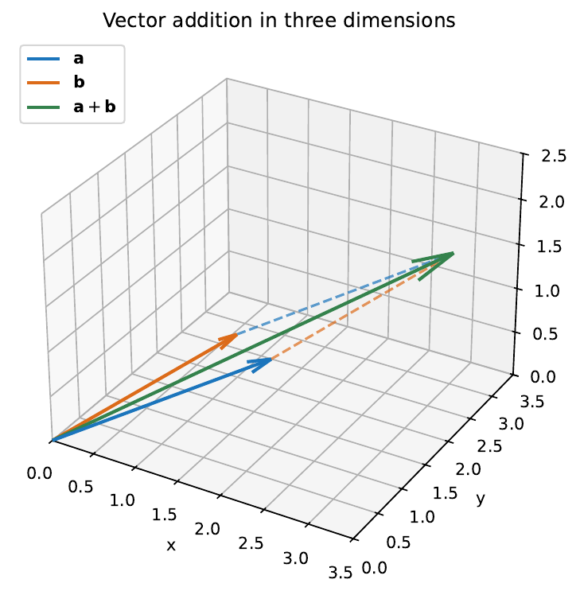
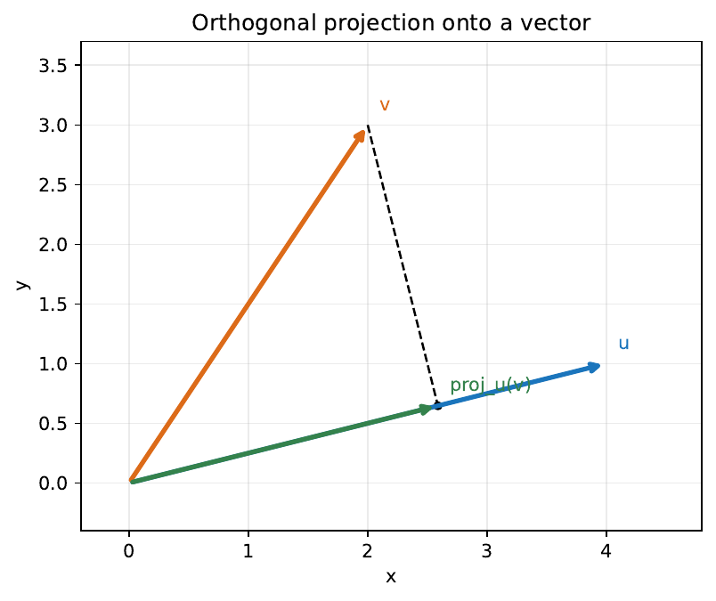
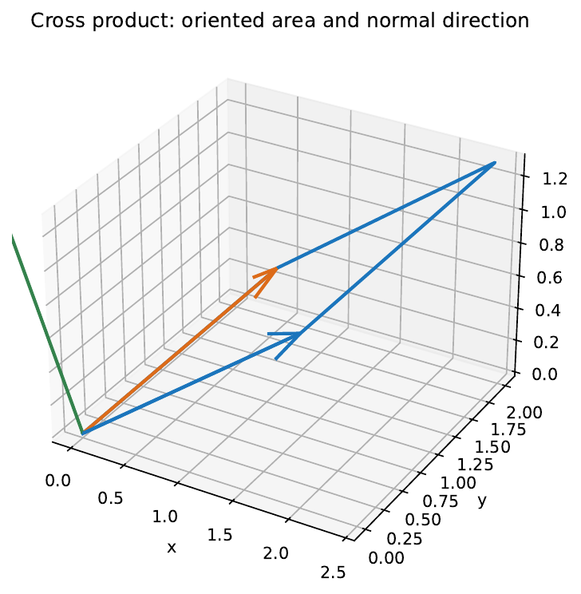
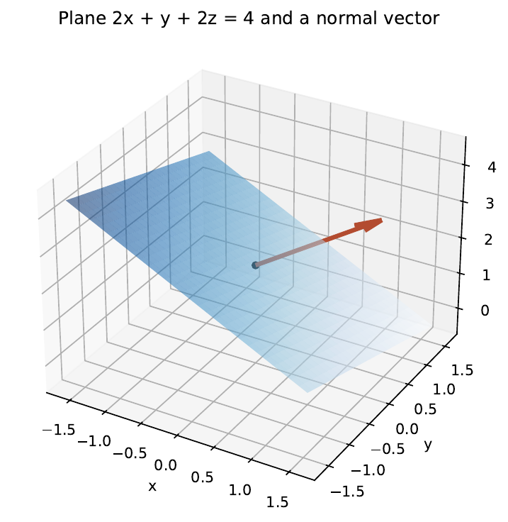
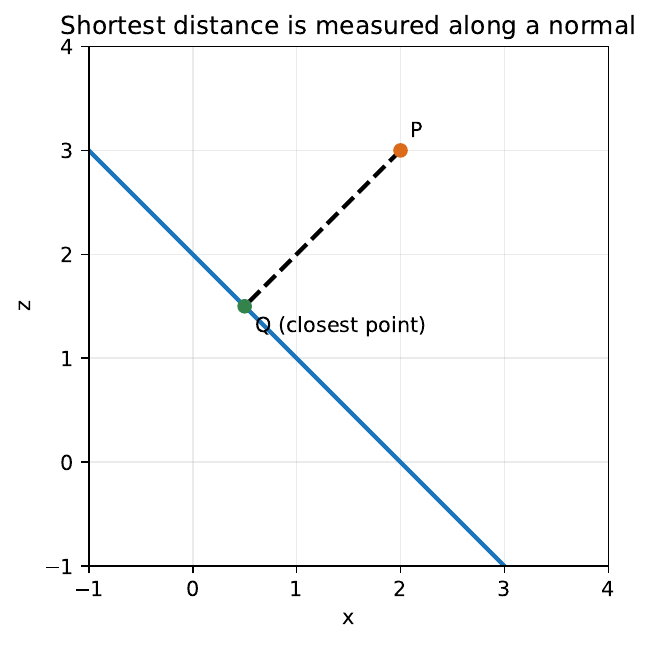

1. Vectors and Geometry in Three-Dimensional Space
Learning. After completing this chapter, you should be able to distinguish points from vectors; perform vector operations in \(\mathbb{R}^2\) and \(\mathbb{R}^3\); interpret dot and cross products geometrically; compute projections, angles, areas, and volumes; derive equations of lines and planes; solve distance problems; and verify geometric results using Python.
Interactive investigation: Vector projection
Adjust the direction of a unit vector u and project v=(3,2) onto it.
Explore: When is the projection zero? When is its length largest?
Why three-dimensional geometry matters
The physical world offers countless reasons to study geometry in three dimensions. A drone changes its position while the wind alters its velocity. A sensor reports three orthogonal components of acceleration. A structural engineer needs a direction perpendicular to a sloping roof. A geologist represents a rock layer by a plane, while a computer-graphics program represents a surface using small oriented triangles. The same mathematical language supports all of these settings.
We start with a distinction that will recur throughout the book. A point describes a location; a vector describes a displacement, direction, or quantity with components. Their coordinate representations can look identical, but their roles are different. Once an origin is chosen, the point \(P=(p_1,p_2,p_3)\) determines a position vector \(\overrightarrow{OP}=\langle p_1,p_2,p_3\rangle\). Changing the origin changes this position vector, whereas a displacement between two points does not.
Cartesian coordinates and distance
Let \(P=(x_1,y_1,z_1)\) and \(Q=(x_2,y_2,z_2)\). The displacement from \(P\) to \(Q\) is \[\label{eq:displacement} \overrightarrow{PQ}=\langle x_2-x_1,\ y_2-y_1,\ z_2-z_1\rangle.\] Repeated use of the Pythagorean theorem gives the distance formula \[\label{eq:distance} d(P,Q)=\sqrt{(x_2-x_1)^2+(y_2-y_1)^2+(z_2-z_1)^2}.\] The three coordinate planes are \(x=0\), \(y=0\), and \(z=0\). The planes divide space into eight octants. For example, \((2,-1,3)\) lies in the octant with positive \(x\) and \(z\) and negative \(y\).
Example — Displacement and distance. A monitoring station is at \(A=(1,-2,4)\) and a drone is at \(B=(5,1,2)\), with coordinates measured in kilometers. The displacement is \(\overrightarrow{AB}=\langle4,3,-2\rangle\) km. The straight-line distance is \(\sqrt{4^2+3^2+(-2)^2}=\sqrt{29}\) km, approximately \(5.385\) km. The displacement carries directional information that the distance alone does not.
Checkpoint. Why is the displacement from \(B\) to \(A\) the negative of the displacement from \(A\) to \(B\), while the distance remains unchanged?
Vectors, arithmetic, and geometric meaning
Definition. A vector in \(\mathbb{R}^3\) is an ordered triple \(\boldsymbol{v}=\langle v_1,v_2,v_3\rangle\). Two vectors are equal when their corresponding components are equal. Addition and scalar multiplication are defined componentwise: \[\boldsymbol{u}+\boldsymbol{v}=\langle u_1+v_1,u_2+v_2,u_3+v_3\rangle,\qquad c\boldsymbol{v}=\langle cv_1,cv_2,cv_3\rangle.\]
A vector can be drawn as an arrow whose length and direction encode its components. Translating the arrow without rotating or changing its length does not change the vector. To add two vectors geometrically, place the tail of the second at the head of the first. The resultant joins the initial tail to the final head. This is the head-to-tail rule. A parallelogram construction yields the same resultant.

Proposition — Algebraic laws. For \(\boldsymbol{u},\boldsymbol{v},\boldsymbol{w}\in\mathbb{R}^3\) and scalars \(a,b\), vector addition is commutative and associative; \(\boldsymbol{0}\) is an additive identity; \(-\boldsymbol{v}\) is an additive inverse; and \[a(\boldsymbol{u}+\boldsymbol{v})=a\boldsymbol{u}+a\boldsymbol{v},\quad (a+b)\boldsymbol{v}=a\boldsymbol{v}+b\boldsymbol{v},\quad a(b\boldsymbol{v})=(ab)\boldsymbol{v}.\]
Proof. Each identity follows from the corresponding real-number identity in each coordinate. For example, the first component of \(a(\boldsymbol{u}+\boldsymbol{v})\) is \(a(u_1+v_1)=au_1+av_1\), which is the first component of \(a\boldsymbol{u}+a\boldsymbol{v}\). The other components agree similarly.
Length and unit vectors
The Euclidean length, or norm, of \(\boldsymbol{v}=\langle v_1,v_2,v_3\rangle\) is \[\left\lVert \boldsymbol{v}\right\rVert=\sqrt{v_1^2+v_2^2+v_3^2}.\] When \(\boldsymbol{v}\neq\boldsymbol{0}\), its normalized version \(\widehat{\boldsymbol{v}}=\boldsymbol{v}/\left\lVert \boldsymbol{v}\right\rVert\) has length one. The standard basis vectors are \(\boldsymbol{i}=\langle1,0,0\rangle\), \(\boldsymbol{j}=\langle0,1,0\rangle\), and \(\boldsymbol{k}=\langle0,0,1\rangle\), so \(\boldsymbol{v}=v_1\boldsymbol{i}+v_2\boldsymbol{j}+v_3\boldsymbol{k}\).
Example — Constructing a prescribed displacement. Find a vector of length \(10\) pointing in the direction \(\langle2,-1,2\rangle\). Since \(\sqrt{4+1+4}=3\), the unit direction is \(\langle2/3,-1/3,2/3\rangle\). Multiplying by \(10\) gives \(\langle20/3,-10/3,20/3\rangle\).
Norm inequalities
The triangle inequality states that \(\left\lVert \boldsymbol{u}+\boldsymbol{v}\right\rVert\leq\left\lVert \boldsymbol{u}\right\rVert+\left\lVert \boldsymbol{v}\right\rVert\). Geometrically, the direct route between two points is no longer than a route through an intermediate point. We will prove this inequality after developing the dot product. Another useful inequality follows immediately: \(|\left\lVert \boldsymbol{u}\right\rVert-\left\lVert \boldsymbol{v}\right\rVert|\leq\left\lVert \boldsymbol{u}-\boldsymbol{v}\right\rVert\), called the reverse triangle inequality.
Python laboratory: vector operations
NumPy represents a vector as a one-dimensional array. The operations
+, -, and * act componentwise,
and np.linalg.norm computes its Euclidean length.
Remark — Computational follow-up. The corresponding R and Python implementations are developed in the paired computational sections after the mathematical foundations.
An array with integer entries can represent exact integers, but division typically creates floating-point results. Floating-point values approximate real numbers and may differ from exact values in their last displayed digits. In later chapters we will use SymPy for symbolic calculations and NumPy for numerical ones.
The dot product, angles, and orthogonality
Definition. For \(\boldsymbol{u},\boldsymbol{v}\in\mathbb{R}^3\), the dot product is \[\label{eq:dot} \boldsymbol{u}\cdot\boldsymbol{v}=u_1v_1+u_2v_2+u_3v_3.\]
The dot product turns two vectors into a scalar. Its geometric meaning is obtained from the law of cosines. If \(\theta\in[0,\pi]\) is the angle between two nonzero vectors, the triangle with sides \(\left\lVert \boldsymbol{u}\right\rVert\), \(\left\lVert \boldsymbol{v}\right\rVert\), and \(\left\lVert \boldsymbol{u}-\boldsymbol{v}\right\rVert\) satisfies \[\left\lVert \boldsymbol{u}-\boldsymbol{v}\right\rVert^2=\left\lVert \boldsymbol{u}\right\rVert^2+\left\lVert \boldsymbol{v}\right\rVert^2-2\left\lVert \boldsymbol{u}\right\rVert\left\lVert \boldsymbol{v}\right\rVert\cos\theta.\] Expanding the left side using components yields \(\left\lVert \boldsymbol{u}\right\rVert^2+\left\lVert \boldsymbol{v}\right\rVert^2-2\boldsymbol{u}\cdot\boldsymbol{v}\). Therefore, \[\label{eq:angle} \boldsymbol{u}\cdot\boldsymbol{v}=\left\lVert \boldsymbol{u}\right\rVert\left\lVert \boldsymbol{v}\right\rVert\cos\theta.\] This formula has three immediate consequences. A positive dot product indicates an acute angle; a negative dot product indicates an obtuse angle; and a zero dot product indicates perpendicular vectors (provided both vectors are nonzero).
Theorem — Cauchy–Schwarz inequality. For any \(\boldsymbol{u},\boldsymbol{v}\in\mathbb{R}^3\), \[|\boldsymbol{u}\cdot\boldsymbol{v}|\leq\left\lVert \boldsymbol{u}\right\rVert\left\lVert \boldsymbol{v}\right\rVert.\] Equality holds precisely when the vectors are linearly dependent, including the case where one vector is zero.
Proof. If \(\boldsymbol{v}=\boldsymbol{0}\), both sides vanish. Otherwise, for every real \(t\), \[0\leq\left\lVert \boldsymbol{u}-t\boldsymbol{v}\right\rVert^2=\left\lVert \boldsymbol{v}\right\rVert^2t^2-2(\boldsymbol{u}\cdot\boldsymbol{v})t+\left\lVert \boldsymbol{u}\right\rVert^2.\] This quadratic is nonnegative for all \(t\), so its discriminant cannot be positive. Thus \(4(\boldsymbol{u}\cdot\boldsymbol{v})^2-4\left\lVert \boldsymbol{u}\right\rVert^2\left\lVert \boldsymbol{v}\right\rVert^2\leq0\). Taking square roots gives the result. Equality occurs when the quadratic attains zero, equivalently \(\boldsymbol{u}=t\boldsymbol{v}\) for some \(t\).
Theorem — Triangle inequality. For all \(\boldsymbol{u},\boldsymbol{v}\in\mathbb{R}^3\), \(\left\lVert \boldsymbol{u}+\boldsymbol{v}\right\rVert\leq\left\lVert \boldsymbol{u}\right\rVert+\left\lVert \boldsymbol{v}\right\rVert\).
Proof. By Cauchy–Schwarz, \[\left\lVert \boldsymbol{u}+\boldsymbol{v}\right\rVert^2=\left\lVert \boldsymbol{u}\right\rVert^2+2\boldsymbol{u}\cdot\boldsymbol{v}+\left\lVert \boldsymbol{v}\right\rVert^2\leq(\left\lVert \boldsymbol{u}\right\rVert+\left\lVert \boldsymbol{v}\right\rVert)^2.\] Both sides are nonnegative, so taking square roots completes the proof.
Example — Angle between directions. For \(\boldsymbol{u}=\langle1,2,2\rangle\) and \(\boldsymbol{v}=\langle2,0,1\rangle\), the dot product is \(4\), while \(\left\lVert \boldsymbol{u}\right\rVert=3\) and \(\left\lVert \boldsymbol{v}\right\rVert=\sqrt5\). Hence \(\cos\theta=4/(3\sqrt5)\) and \(\theta=\arccos(4/(3\sqrt5))\), about \(53.4^\circ\). Notice that a numerical angle is a rounded interpretation of an exact inverse-trigonometric expression.
Projection and decomposition
Suppose \(\boldsymbol{u}\neq\boldsymbol{0}\). We can split \(\boldsymbol{v}\) into a component parallel to \(\boldsymbol{u}\) and a component perpendicular to it. Seek a scalar \(c\) such that \(\boldsymbol{v}-c\boldsymbol{u}\) is perpendicular to \(\boldsymbol{u}\). Taking a dot product gives \[(\boldsymbol{v}-c\boldsymbol{u})\cdot\boldsymbol{u}=0\quad\Longrightarrow\quad c=\frac{\boldsymbol{v}\cdot\boldsymbol{u}}{\boldsymbol{u}\cdot\boldsymbol{u}}.\] Therefore the vector projection is \[\label{eq:proj} \operatorname{proj}_{\boldsymbol{u}}\boldsymbol{v}=\frac{\boldsymbol{v}\cdot\boldsymbol{u}}{\left\lVert \boldsymbol{u}\right\rVert^2}\boldsymbol{u}.\] The perpendicular component is \(\boldsymbol{v}-\operatorname{proj}_{\boldsymbol{u}}\boldsymbol{v}\). The scalar projection, which can be negative, is \((\boldsymbol{v}\cdot\boldsymbol{u})/\left\lVert \boldsymbol{u}\right\rVert\).

Example — A force along an incline. A force \(\boldsymbol{F}=\langle12,5\rangle\) newtons acts on an object constrained to move in the unit direction \(\boldsymbol{e}=\langle3/5,4/5\rangle\). The component of force along the motion is \(\boldsymbol{F}\cdot\boldsymbol{e}=36/5+20/5=56/5\) N. The force vector parallel to the motion is \((56/5)\boldsymbol{e}=\langle168/25,224/25\rangle\) N. The perpendicular component does no work during motion along the specified line.
Python laboratory: exact and numerical angles
Remark — Computational follow-up. The corresponding R and Python implementations are developed in the paired computational sections after the mathematical foundations.
The call to np.clip protects against tiny floating-point
errors that could otherwise place a computed cosine just outside \([-1,1]\).
The cross product and oriented area
The dot product measures alignment; the cross product creates a vector perpendicular to a pair of vectors. For \(\boldsymbol{u}=\langle u_1,u_2,u_3\rangle\) and \(\boldsymbol{v}=\langle v_1,v_2,v_3\rangle\), define \[\label{eq:cross} \boldsymbol{u}\times\boldsymbol{v}=\langle u_2v_3-u_3v_2,\ u_3v_1-u_1v_3,\ u_1v_2-u_2v_1\rangle.\] A mnemonic is the formal determinant \[\boldsymbol{u}\times\boldsymbol{v}=\begin{vmatrix}\boldsymbol{i}&\boldsymbol{j}&\boldsymbol{k}\\u_1&u_2&u_3\\v_1&v_2&v_3\end{vmatrix},\] expanded along the first row. This notation is a mnemonic for the component formula, not an ordinary determinant with scalar entries in every position.
Proposition — Cross-product properties. For \(\boldsymbol{u},\boldsymbol{v},\boldsymbol{w}\in\mathbb{R}^3\) and a scalar \(c\), \[\boldsymbol{u}\times\boldsymbol{v}=-(\boldsymbol{v}\times\boldsymbol{u}),\quad \boldsymbol{u}\times(\boldsymbol{v}+\boldsymbol{w})=\boldsymbol{u}\times\boldsymbol{v}+\boldsymbol{u}\times\boldsymbol{w},\quad (c\boldsymbol{u})\times\boldsymbol{v}=c(\boldsymbol{u}\times\boldsymbol{v}).\] Furthermore, \((\boldsymbol{u}\times\boldsymbol{v})\cdot\boldsymbol{u}=(\boldsymbol{u}\times\boldsymbol{v})\cdot\boldsymbol{v}=0\).
Proof. The first three identities follow by expanding the component formula. For perpendicularity, substitute Equation [eq:cross] into the dot product with \(\boldsymbol{u}\): each product \(u_1u_2v_3\), \(u_1u_3v_2\), and \(u_2u_3v_1\) appears once positively and once negatively, so the sum vanishes. The calculation with \(\boldsymbol{v}\) is analogous.
Magnitude, area, and orientation
If \(\theta\) is the angle between nonzero vectors, then \[\label{eq:crossarea} \left\lVert \boldsymbol{u}\times\boldsymbol{v}\right\rVert=\left\lVert \boldsymbol{u}\right\rVert\left\lVert \boldsymbol{v}\right\rVert\sin\theta.\] The right side is base times height of the parallelogram spanned by the two vectors. Thus the parallelogram area is \(\left\lVert \boldsymbol{u}\times\boldsymbol{v}\right\rVert\), and the area of the corresponding triangle is half as large. The direction of the cross product is determined by the right-hand rule. Swapping the factors reverses this direction but preserves the area.

Example — Area of a spatial triangle. Let \(A=(1,0,0)\), \(B=(3,1,0)\), and \(C=(1,2,2)\). The side vectors are \(\overrightarrow{AB}=\langle2,1,0\rangle\) and \(\overrightarrow{AC}=\langle0,2,2\rangle\). Their cross product is \(\langle2,-4,4\rangle\), with norm \(6\). The triangle’s area is therefore \(3\) square units.
Lagrange’s identity
A useful identity connects dot and cross products: \[\label{eq:lagrange} \left\lVert \boldsymbol{u}\times\boldsymbol{v}\right\rVert^2=\left\lVert \boldsymbol{u}\right\rVert^2\left\lVert \boldsymbol{v}\right\rVert^2-(\boldsymbol{u}\cdot\boldsymbol{v})^2.\]
Proof. Expand the squares of the three components of \(\boldsymbol{u}\times\boldsymbol{v}\). Terms involving \(u_i^2v_j^2\) with \(i\neq j\) remain positive, while each mixed product \(u_iu_jv_iv_j\) occurs with coefficient \(-2\). Expanding \(\left(\sum u_i^2\right)\left(\sum v_j^2\right)-\left(\sum u_iv_i\right)^2\) produces exactly the same terms.
Combining Equation [eq:lagrange] with Equation [eq:angle] gives Equation [eq:crossarea], because \(\sin\theta\geq0\) on \([0,\pi]\). In particular, \(\boldsymbol{u}\times\boldsymbol{v}=\boldsymbol{0}\) precisely when the two vectors are linearly dependent.
Torque as an application
A force \(\boldsymbol{F}\) applied at a displacement \(\boldsymbol{r}\) from a pivot produces torque \(\boldsymbol{\tau}=\boldsymbol{r}\times\boldsymbol{F}\). Its magnitude is \(\left\lVert \boldsymbol{r}\right\rVert\left\lVert \boldsymbol{F}\right\rVert\sin\theta\), so only the component of force perpendicular to the lever arm contributes. The direction describes the axis of the induced rotational tendency. For \(\boldsymbol{r}=\langle2,0,0\rangle\) meters and \(\boldsymbol{F}=\langle0,3,4\rangle\) newtons, \(\boldsymbol{\tau}=\langle0,-8,6\rangle\) N\(\cdot\)m and \(\left\lVert \boldsymbol{\tau}\right\rVert=10\) N\(\cdot\)m.
Remark — Computational follow-up. The corresponding R and Python implementations are developed in the paired computational sections after the mathematical foundations.
Scalar triple products and spatial volume
Given three vectors, the scalar triple product is \(\boldsymbol{u}\cdot(\boldsymbol{v}\times\boldsymbol{w})\). In coordinates it equals the determinant of the matrix whose rows are the three vectors: \[\label{eq:triple} \boldsymbol{u}\cdot(\boldsymbol{v}\times\boldsymbol{w})= \begin{vmatrix}u_1&u_2&u_3\\v_1&v_2&v_3\\w_1&w_2&w_3\end{vmatrix}.\] The absolute value is the volume of the parallelepiped with edge vectors \(\boldsymbol{u}\), \(\boldsymbol{v}\), and \(\boldsymbol{w}\). To see this, take the parallelogram spanned by \(\boldsymbol{v}\) and \(\boldsymbol{w}\) as the base. Its area is \(\left\lVert \boldsymbol{v}\times\boldsymbol{w}\right\rVert\), and the perpendicular height is the absolute scalar projection of \(\boldsymbol{u}\) onto the unit normal \((\boldsymbol{v}\times\boldsymbol{w})/\left\lVert \boldsymbol{v}\times\boldsymbol{w}\right\rVert\). Their product simplifies to \(|\boldsymbol{u}\cdot(\boldsymbol{v}\times\boldsymbol{w})|\). The same expression vanishes if and only if the three vectors are coplanar (linearly dependent).
Example — Volume and orientation. Let \(\boldsymbol{u}=\langle1,0,2\rangle\), \(\boldsymbol{v}=\langle0,2,1\rangle\), and \(\boldsymbol{w}=\langle2,1,0\rangle\). Since \(\boldsymbol{v}\times\boldsymbol{w}=\langle-1,2,-4\rangle\), the triple product is \(-9\). The volume is \(9\) cubic units. The negative sign records orientation, not negative physical volume. A tetrahedron with the same three edge vectors from one vertex has volume \(9/6=3/2\) cubic units.
Computational verification
Remark — Computational follow-up. The corresponding R and Python implementations are developed in the paired computational sections after the mathematical foundations.
The numerical determinant may be represented by a floating-point
value extremely close to an integer. In a numerical computation, test
approximate equality with a tolerance rather than using ==
indiscriminately.
Lines in space
A line is specified by a point \(P_0=(x_0,y_0,z_0)\) and a nonzero direction vector \(\boldsymbol{d}=\langle a,b,c\rangle\). A point \(P\) belongs to the line exactly when \(\overrightarrow{P_0P}\) is a scalar multiple of \(\boldsymbol{d}\). Thus its vector equation is \[\label{eq:line} \boldsymbol{r}(t)=\boldsymbol{r}_0+t\boldsymbol{d},\qquad t\in\mathbb{R}.\] The corresponding parametric equations are \(x=x_0+at\), \(y=y_0+bt\), and \(z=z_0+ct\). If \(a,b,c\) are all nonzero, eliminating \(t\) gives \((x-x_0)/a=(y-y_0)/b=(z-z_0)/c\). If a direction component is zero, its coordinate remains constant, and division by that component is not permitted.
Example — Line through two points. Find a line through \(A=(1,2,-1)\) and \(B=(3,-2,5)\). The direction \(\overrightarrow{AB}=\langle2,-4,6\rangle\) may be simplified to \(\langle1,-2,3\rangle\). Hence \(\boldsymbol{r}(t)=\langle1,2,-1\rangle+t\langle1,-2,3\rangle\). The point \(B\) corresponds to \(t=2\) in this parametrization. Infinitely many parametrizations describe the same line; changing the direction vector by a nonzero scalar changes only the parameter scale.
Relative positions of two lines
Two lines in \(\mathbb{R}^3\) may intersect, be parallel, coincide, or be skew (neither parallel nor intersecting). Suppose \[L_1:\ \boldsymbol{r}=\boldsymbol{p}+s\boldsymbol{u},\qquad L_2:\ \boldsymbol{r}=\boldsymbol{q}+t\boldsymbol{v}.\] They intersect if and only if there exist real \(s,t\) satisfying \(\boldsymbol{p}+s\boldsymbol{u}=\boldsymbol{q}+t\boldsymbol{v}\). This is a system of three equations in two unknowns; consistency must be checked in all three coordinates. If \(\boldsymbol{u}\times\boldsymbol{v}\neq\boldsymbol{0}\), the lines are not parallel, but they can still be skew.
Example — Skew lines. Consider \(L_1: (x,y,z)=(t,0,0)\) and \(L_2:(x,y,z)=(0,s,1)\). The first lies on the \(x\)-axis, while the second lies one unit above the \(xy\)-plane and points in the \(y\)-direction. They are not parallel, but every point of \(L_1\) has \(z=0\) and every point of \(L_2\) has \(z=1\). Therefore they do not intersect: the lines are skew.
Distance from a point to a line
Let \(P\) be a point, and let the line pass through \(A\) with direction \(\boldsymbol{d}\neq\boldsymbol{0}\). The perpendicular component of \(\overrightarrow{AP}\) is the shortest displacement from the line to \(P\). By the area interpretation of the cross product, \[\label{eq:pointline} \operatorname{dist}(P,L)=\frac{\left\lVert \overrightarrow{AP}\times\boldsymbol{d}\right\rVert}{\left\lVert \boldsymbol{d}\right\rVert}.\] Alternatively, compute \(\overrightarrow{AP}-\operatorname{proj}_{\boldsymbol{d}}\overrightarrow{AP}\) and take its norm. These expressions agree by Lagrange’s identity.
Example — Distance to a line. Find the distance from \(P=(1,2,3)\) to the \(z\)-axis. Choose \(A=(0,0,0)\) and \(\boldsymbol{d}=\langle0,0,1\rangle\). Then \(\overrightarrow{AP}\times\boldsymbol{d}=\langle2,-1,0\rangle\), so the distance is \(\sqrt5\). This agrees with the horizontal distance \(\sqrt{x^2+y^2}\) from \((1,2,3)\) to \((0,0,3)\).
Planes and their normal vectors
A plane through \(P_0=(x_0,y_0,z_0)\) with nonzero normal vector \(\boldsymbol{n}=\langle a,b,c\rangle\) consists of points \(P\) for which \(\overrightarrow{P_0P}\) is perpendicular to \(\boldsymbol{n}\). Thus \[\label{eq:plane} \boldsymbol{n}\cdot(\boldsymbol{r}-\boldsymbol{r}_0)=0 \quad\Longleftrightarrow\quad a(x-x_0)+b(y-y_0)+c(z-z_0)=0.\] Collecting constants gives \(ax+by+cz=d\), where \(d=ax_0+by_0+cz_0\). The normal vector determines the orientation of the plane, while \(d\) controls its position relative to the origin.

Example — Plane through three points. Find the plane through \(A=(1,0,1)\), \(B=(2,1,1)\), and \(C=(1,2,3)\). Two in-plane directions are \(\overrightarrow{AB}=\langle1,1,0\rangle\) and \(\overrightarrow{AC}=\langle0,2,2\rangle\). Their cross product is \(\langle2,-2,2\rangle\), so a simpler normal is \(\langle1,-1,1\rangle\). Using point \(A\), the plane equation is \((x-1)-y+(z-1)=0\), or \(x-y+z=2\). Substitution confirms that all three given points satisfy the equation.
Angles between planes and lines
The acute angle between two planes is the acute angle between their normal vectors. If the normals are \(\boldsymbol{n}_1\) and \(\boldsymbol{n}_2\), then \[\cos\phi=\frac{|\boldsymbol{n}_1\cdot\boldsymbol{n}_2|}{\left\lVert \boldsymbol{n}_1\right\rVert\left\lVert \boldsymbol{n}_2\right\rVert},\qquad0\leq\phi\leq\frac\pi2.\] For a line with direction \(\boldsymbol{d}\) and a plane with normal \(\boldsymbol{n}\), the acute angle \(\alpha\) between the line and the plane satisfies \[\sin\alpha=\frac{|\boldsymbol{d}\cdot\boldsymbol{n}|}{\left\lVert \boldsymbol{d}\right\rVert\left\lVert \boldsymbol{n}\right\rVert}.\] The sine appears because the line–plane angle is complementary to the acute angle between the line direction and the plane normal.
Distance from a point to a plane
For the plane \(ax+by+cz=d\) and point \(P=(x_1,y_1,z_1)\), the signed displacement along the unit normal is \((ax_1+by_1+cz_1-d)/\sqrt{a^2+b^2+c^2}\). Taking the absolute value yields \[\label{eq:pointplane} \operatorname{dist}(P,\Pi)=\frac{|ax_1+by_1+cz_1-d|}{\sqrt{a^2+b^2+c^2}}.\]
Proof. Choose any point \(Q\) on the plane and let \(\boldsymbol{n}=\langle a,b,c\rangle\). The component of \(\overrightarrow{QP}\) in the normal direction is \(\overrightarrow{QP}\cdot\boldsymbol{n}/\left\lVert \boldsymbol{n}\right\rVert\). Because \(\boldsymbol{n}\cdot\boldsymbol{q}=d\), its numerator is \(\boldsymbol{n}\cdot\boldsymbol{p}-d\). The perpendicular segment has the least possible length, since every other segment from \(P\) to the plane includes an additional tangential component. This gives the formula.

Example — Point-to-plane distance. For \(P=(1,2,3)\) and \(\Pi:2x-y+2z=5\), the numerator is \(|2-2+6-5|=1\), and the normal length is \(\sqrt{4+1+4}=3\). Thus the distance is \(1/3\). The closest point is \(P-(1/9)\langle2,-1,2\rangle=(7/9,19/9,25/9)\); substitution confirms that it lies on the plane.
Python laboratory: symbolic plane geometry
Remark — Computational follow-up. The corresponding R and Python implementations are developed in the paired computational sections after the mathematical foundations.
Here the plane is the one through \(A,B,C\), namely \(x-y+z=2\); the code computes the distance from \(P\) to that plane. Do not confuse this computational example with the preceding worked example, which uses a different plane.
Intersections and linear systems
Intersections of planes are naturally solved by linear algebra. Two nonparallel planes typically meet in a line. Three planes may meet at one point, a line, or not at all. Their equations can be organized as a matrix system \(A\boldsymbol{x}=\boldsymbol{b}\). When \(A\) is square and invertible, the solution is unique. When \(A\) is singular, further consistency checks are required.
Example — Three planes meeting at a point. Solve \(x+y+z=6\), \(x-y+z=2\), and \(2x+y-z=1\). Subtracting the second equation from the first gives \(2y=4\), hence \(y=2\). The first equation then gives \(x+z=4\), and the third gives \(2x-z=-1\). Adding twice the first reduced equation to the last gives \(3x=3\), so \(x=1\) and \(z=3\). The intersection point is \((1,2,3)\).
Remark — Computational follow-up. The corresponding R and Python implementations are developed in the paired computational sections after the mathematical foundations.
The residual \(A\boldsymbol{x}-\boldsymbol{b}\) quantifies how closely a numerical solution satisfies the original equations. A small residual is useful evidence of consistency, but by itself it does not establish the accuracy of a computed solution for every poorly conditioned system.
Applications: navigation, work, and geometric modeling
The same geometric operations appear across disciplines. This section develops three representative applications, each emphasizing a different mathematical idea.
Navigation and relative velocity
Suppose an aircraft has air-relative velocity \(\boldsymbol{v}_a=\langle180,40,10\rangle\) km/h and a wind velocity \(\boldsymbol{v}_w=\langle-20,30,0\rangle\) km/h. Its ground-relative velocity is \(\boldsymbol{v}_g=\boldsymbol{v}_a+\boldsymbol{v}_w=\langle160,70,10\rangle\) km/h. The ground speed is \(\sqrt{160^2+70^2+10^2}=\sqrt{30600}\approx174.93\) km/h. Over a constant-velocity interval of \(0.25\) h, the displacement is \(\langle40,17.5,2.5\rangle\) km. A vector model clarifies why speeds cannot simply be added as scalars when directions differ.
Work as a dot product
If a constant force \(\boldsymbol{F}\) acts on an object undergoing displacement \(\boldsymbol{d}\), the work is \(W=\boldsymbol{F}\cdot\boldsymbol{d}\). For \(\boldsymbol{F}=\langle8,-2,4\rangle\) N and \(\boldsymbol{d}=\langle3,1,2\rangle\) m, the work is \(24-2+8=30\) joules. A force perpendicular to the displacement contributes no work. This interpretation prepares us for line integrals, in which the force or direction of motion can vary along a path.
Fitting a plane to measured data
A collection of noisy points need not lie on one exact plane. In practice, a least-squares model \(z=ax+by+c\) can summarize an approximately planar surface. For observations \((x_i,y_i,z_i)\), the coefficients minimize \(\sum_i(z_i-ax_i-by_i-c)^2\). If the design matrix \(X\) has rows \((x_i,y_i,1)\) and \(\boldsymbol{z}\) collects the observed heights, a numerical least-squares solver finds the coefficients without requiring manual solution of the normal equations.
Remark — Computational follow-up. The corresponding R and Python implementations are developed in the paired computational sections after the mathematical foundations.
This is an early preview of optimization. In a later chapter we will study gradients and least-squares geometry more systematically. The fitted plane is not necessarily an exact plane through every observation, and it should not be confused with the unique plane through three noncollinear points.
A guided computational investigation
Question. How can the same geometric problem be solved analytically, symbolically, and numerically? Consider three sensor locations \(A=(1,0,1)\), \(B=(2,1,1)\), and \(C=(1,2,3)\). They determine a plane. A fourth sensor at \(P=(3,1,4)\) is not necessarily on it. Determine a normal, the plane equation, the shortest distance from \(P\) to the plane, and the closest point \(Q\) on the plane.
Step 1: hand calculation.
Compute \(\overrightarrow{AB}=\langle1,1,0\rangle\) and \(\overrightarrow{AC}=\langle0,2,2\rangle\). Their cross product is \(\langle2,-2,2\rangle\), so use \(\boldsymbol{n}=\langle1,-1,1\rangle\). The plane is \(x-y+z=2\). At \(P\), the signed plane residual is \(3-1+4-2=4\), so the distance is \(4/\sqrt3\). The closest point is \[Q=P-\frac{4}{\left\lVert \boldsymbol{n}\right\rVert^2}\boldsymbol{n} =\left(\frac53,\frac73,\frac83\right).\] Indeed \(5/3-7/3+8/3=2\).
Step 2: symbolic verification.
Use SymPy matrices and exact rational arithmetic:
Remark — Computational follow-up. The corresponding R and Python implementations are developed in the paired computational sections after the mathematical foundations.
Step 3: numerical verification.
Convert the exact quantities to NumPy arrays. Check that \(Q\) lies on the plane and that \(P-Q\) is parallel to the normal. Then perturb the coordinates of \(P\) and describe how the distance changes. What changes if the normal vector is multiplied by \(-3\)? What stays invariant?
Step 4: interpretation.
Explain in a paragraph why the nearest point is found by moving along the normal rather than along an arbitrary direction. Include units if the coordinates represent physical distances. Finally, use the supplied figure-generation script to produce a plane-and-normal plot and identify which parts of the visualization are mathematical objects and which are viewing choices (camera angle, axis limits, and transparency).
Common misconceptions and mathematical habits
Point versus vector. A location and a displacement may use the same numerical triple but have different meanings.
Angle conventions. The angle between nonzero vectors lies in \([0,\pi]\); the acute angle between two unoriented planes lies in \([0,\pi/2]\).
Dot versus cross product. A dot product is a scalar; a cross product is a vector in \(\mathbb{R}^3\).
Direction versus magnitude. The sign of a scalar triple product encodes orientation, not a negative geometric volume.
Zero denominators. Symmetric line equations must not divide by zero direction components.
Numerical versus exact. Decimal approximations should not silently replace exact radicals or rational values.
Visual evidence versus proof. A plot can reveal an error or suggest a pattern, but cannot prove a universal statement.
Chapter summary
The principal formulas are collected below. They are best understood as consequences of geometry rather than memorized in isolation.
| Quantity | Formula |
|---|---|
| Distance | \(d(P,Q)=\left\lVert \overrightarrow{PQ}\right\rVert\) |
| Dot product | \(\boldsymbol{u}\cdot\boldsymbol{v}=\sum_i u_iv_i=\left\lVert \boldsymbol{u}\right\rVert\left\lVert \boldsymbol{v}\right\rVert\cos\theta\) |
| Projection onto \(\boldsymbol{u}\) | \(\operatorname{proj}_{\boldsymbol{u}}\boldsymbol{v}=(\boldsymbol{v}\cdot\boldsymbol{u})\boldsymbol{u}/\left\lVert \boldsymbol{u}\right\rVert^2\) |
| Parallelogram area | \(\left\lVert \boldsymbol{u}\times\boldsymbol{v}\right\rVert\) |
| Parallelepiped volume | \(|\boldsymbol{u}\cdot(\boldsymbol{v}\times\boldsymbol{w})|\) |
| Line | \(\boldsymbol{r}(t)=\boldsymbol{r}_0+t\boldsymbol{d}\) |
| Plane | \(\boldsymbol{n}\cdot(\boldsymbol{r}-\boldsymbol{r}_0)=0\) |
| Point-to-line distance | \(\left\lVert \overrightarrow{AP}\times\boldsymbol{d}\right\rVert/\left\lVert \boldsymbol{d}\right\rVert\) |
| Point-to-plane distance | \(|ax_1+by_1+cz_1-d|/\sqrt{a^2+b^2+c^2}\) |
Further mathematical foundations: affine geometry and orientation
Why points cannot be added without a choice of origin
The difference \(Q-P\) of two points is a vector and does not depend on the origin. By contrast, the coordinate expression \(P+Q\) is not an intrinsic point operation. The midpoint \((P+Q)/2\) is meaningful because its coefficients sum to one. More generally, for points \(P_1,\ldots,P_m\) and scalars \(\lambda_i\) satisfying \(\sum_i\lambda_i=1\), the affine combination \(\sum_i\lambda_iP_i\) is independent of a change of origin. Indeed, shifting the origin changes every coordinate representation by the same vector \(\boldsymbol{a}\), and the combination changes by \(\sum_i\lambda_i\boldsymbol{a}=\boldsymbol{a}\). This is exactly the coordinate change expected of a point.
Example — Barycentric coordinates in a triangle. Let \(A=(1,0,0)\), \(B=(0,2,0)\), and \(C=(0,0,3)\). The point \(P=\frac12A+\frac13B+\frac16C\) has coordinates \((1/2,2/3,1/2)\). The coefficients are nonnegative and sum to one, so \(P\) lies in the filled triangle with vertices \(A,B,C\). Verify directly that \(P-A=\frac13(B-A)+\frac16(C-A)\).
Orthonormal bases and coordinate invariance
A collection of three mutually perpendicular unit vectors \(\boldsymbol{e}_1,\boldsymbol{e}_2,\boldsymbol{e}_3\) is an orthonormal basis of \(\mathbb{R}^3\). For \(\boldsymbol{v}=\sum_i v_i\boldsymbol{e}_i\), orthonormality gives \(\left\lVert \boldsymbol{v}\right\rVert^2=\sum_i v_i^2\). Thus the distance formula is valid in every orthonormal coordinate system, not only the standard one. If \(Q\) is an orthogonal \(3\times3\) matrix, then \(Q^TQ=I\) and \[\left\lVert Q\boldsymbol{v}\right\rVert^2=(Q\boldsymbol{v})^T(Q\boldsymbol{v})=\boldsymbol{v}^TQ^TQ\boldsymbol{v}=\left\lVert \boldsymbol{v}\right\rVert^2.\] Orthogonal transformations preserve dot products and angles. Their determinant is \(+1\) for an orientation-preserving rotation and \(-1\) for an orientation-reversing reflection.
Example — Rotating a measured displacement. A sensor reports \(\boldsymbol{v}=(3,4,2)\) in its local coordinates. Rotating the sensor axes through \(90^\circ\) about the vertical axis maps the vector to \((-4,3,2)\). Both coordinate descriptions have length \(\sqrt{29}\). The components change, but the physical displacement does not.
Determinants, orientation, and degeneracy
For three vectors \(\boldsymbol{a},\boldsymbol{b},\boldsymbol{c}\), the determinant \(\det[\boldsymbol{a}\ \boldsymbol{b}\ \boldsymbol{c}]\) is their signed volume. Reversing two columns reverses the sign; a zero determinant means the three vectors are linearly dependent. In particular, points \(A,B,C,D\) are coplanar if and only if \[\det[\overrightarrow{AB}\ \overrightarrow{AC}\ \overrightarrow{AD}]=0.\] This provides a coordinate-free criterion once the displacement vectors are formed.
Example — Testing coplanarity. Let \(A=(0,0,0)\), \(B=(1,0,1)\), \(C=(0,2,1)\), and \(D=(2,2,3)\). Since \(\overrightarrow{AD}=2\overrightarrow{AB}+\overrightarrow{AC}\), the determinant vanishes and the four points lie in one plane. The plane normal \(\overrightarrow{AB}\times\overrightarrow{AC}=(-2,-1,2)\) confirms that \(D\) satisfies \(-2x-y+2z=0\).
Additional geometric derivations and worked problems
Deriving the point-to-line distance formula
Let the line be \(L=\{A+t\boldsymbol{d}:t\in\mathbb{R}\}\) with \(\boldsymbol{d}\ne\boldsymbol{0}\). For any point \(P\), set \(\boldsymbol{w}=P-A\). The closest point on the line is the orthogonal projection \(A+t_*\boldsymbol{d}\), where \[t_*=\frac{\boldsymbol{w}\cdot\boldsymbol{d}}{\boldsymbol{d}\cdot\boldsymbol{d}}.\] To justify the minimizer, expand \[\left\lVert \boldsymbol{w}-t\boldsymbol{d}\right\rVert^2=\left\lVert \boldsymbol{d}\right\rVert^2(t-t_*)^2+\left\lVert \boldsymbol{w}\right\rVert^2-\frac{(\boldsymbol{w}\cdot\boldsymbol{d})^2}{\left\lVert \boldsymbol{d}\right\rVert^2}.\] The first term is nonnegative and vanishes only at \(t=t_*\). Using \(\left\lVert \boldsymbol{w}\times\boldsymbol{d}\right\rVert^2=\left\lVert \boldsymbol{w}\right\rVert^2\left\lVert \boldsymbol{d}\right\rVert^2-(\boldsymbol{w}\cdot\boldsymbol{d})^2\) gives the familiar equivalent formula \[d(P,L)=\frac{\left\lVert \boldsymbol{w}\times\boldsymbol{d}\right\rVert}{\left\lVert \boldsymbol{d}\right\rVert}.\]
Example — A nearest point on a spatial line. Find the nearest point to \(P=(1,2,3)\) on \(L:A=(0,0,1)+t(1,1,0)\). Here \(\boldsymbol{w}=(1,2,2)\), \(\boldsymbol{d}=(1,1,0)\), and \(t_*=(1+2)/2=3/2\). The foot is \(H=(3/2,3/2,1)\) and the distance is \(\left\lVert P-H\right\rVert=\sqrt{(1/2)^2+(1/2)^2+2^2}=3/\sqrt2\).
Distance between skew lines
Consider \(L_1:A+s\boldsymbol{u}\) and \(L_2:B+t\boldsymbol{v}\), with nonparallel directions \(\boldsymbol{u},\boldsymbol{v}\). Their common perpendicular direction is \(\boldsymbol{n}=\boldsymbol{u}\times\boldsymbol{v}\). The displacement between arbitrary points on the two lines is \((B-A)+t\boldsymbol{v}-s\boldsymbol{u}\). Its component along \(\boldsymbol{n}\) is independent of \(s,t\); consequently the shortest possible separation is \[d(L_1,L_2)=\frac{|(B-A)\cdot(\boldsymbol{u}\times\boldsymbol{v})|}{\left\lVert \boldsymbol{u}\times\boldsymbol{v}\right\rVert}.\] The formula requires \(\boldsymbol{u}\times\boldsymbol{v}\ne\boldsymbol{0}\). Parallel lines must be handled using the point-to-line formula instead.
Example — Distance between skew lines. Let \(L_1:(0,0,0)+s(1,0,0)\) and \(L_2:(0,1,1)+t(0,1,0)\). The cross product of the directions is \((0,0,1)\), so the distance is \(|(0,1,1)\cdot(0,0,1)|=1\). The nearest pair occurs at \((0,0,0)\) on the first line and \((0,0,1)\) on the second (take \(t=-1\)).
Distance from a point to a plane: a projection proof
For a plane \(\boldsymbol{n}\cdot\boldsymbol{x}=d\) with \(\boldsymbol{n}\ne\boldsymbol{0}\), choose any point \(A\) on the plane. The signed normal displacement from \(A\) to \(P\) is \((\boldsymbol{n}\cdot(P-A))/\left\lVert \boldsymbol{n}\right\rVert\). Since \(\boldsymbol{n}\cdot A=d\), the unsigned shortest distance is \[d(P,\Pi)=\frac{|\boldsymbol{n}\cdot P-d|}{\left\lVert \boldsymbol{n}\right\rVert}.\] The nearest point is \(H=P-\frac{\boldsymbol{n}\cdot P-d}{\left\lVert \boldsymbol{n}\right\rVert^2}\boldsymbol{n}\). Substitution shows \(\boldsymbol{n}\cdot H=d\), and \(P-H\) is normal to the plane.
Example — Foot of the perpendicular. For \(P=(2,1,4)\) and \(2x-y+2z=3\), we have \(\boldsymbol{n}=(2,-1,2)\) and \(\boldsymbol{n}\cdot P-d=8\). Hence \(H=P-(8/9)(2,-1,2)=(2/9,17/9,20/9)\) and \(d(P,\Pi)=8/3\). Checking \(2(2/9)-17/9+2(20/9)=3\) verifies that \(H\) lies on the plane.
Conditioning and measurement error
If measured coordinates have small perturbations \(\delta\boldsymbol{u}\) and \(\delta\boldsymbol{v}\), then the reverse triangle inequality yields \[\big|\left\lVert \boldsymbol{u}+\delta\boldsymbol{u}\right\rVert-\left\lVert \boldsymbol{u}\right\rVert\big|\le\left\lVert \delta\boldsymbol{u}\right\rVert.\] Likewise, bilinearity of the dot product gives \[(\boldsymbol{u}+\delta\boldsymbol{u})\cdot(\boldsymbol{v}+\delta\boldsymbol{v})-\boldsymbol{u}\cdot\boldsymbol{v} =\delta\boldsymbol{u}\cdot\boldsymbol{v}+\boldsymbol{u}\cdot\delta\boldsymbol{v}+\delta\boldsymbol{u}\cdot\delta\boldsymbol{v}.\] Cauchy–Schwarz bounds the absolute error by \(\left\lVert \delta\boldsymbol{u}\right\rVert\left\lVert \boldsymbol{v}\right\rVert+\left\lVert \boldsymbol{u}\right\rVert\left\lVert \delta\boldsymbol{v}\right\rVert+\left\lVert \delta\boldsymbol{u}\right\rVert\left\lVert \delta\boldsymbol{v}\right\rVert\). These inequalities explain why calculations involving almost parallel directions require extra care: the cross-product magnitude approaches zero, amplifying relative errors in normalized cross products.
Checkpoint. Why should a program reject a zero direction vector when defining a line? Why should it warn when the cross product of two direction vectors is nearly zero?
Source-specific examples retained for conceptual comparison
The two original manuscripts occasionally use different numerical data to illuminate the same geometric concept. We retain those as distinct examples rather than collapsing them merely because their headings match.
Example — An R-source orthogonality test. The R manuscript uses \(\boldsymbol{a}=(1,2,-1)\) and \(\boldsymbol{b}=(2,0,2)\). Their dot product is \(2+0-2=0\), so they are perpendicular. This is a particularly useful test case for automated vector functions because the expected dot product is exactly zero.
Example — A Python-source angle calculation. Let \(\boldsymbol{u}=(1,2,0)\) and \(\boldsymbol{v}=(2,1,2)\). Then \(\boldsymbol{u}\cdot\boldsymbol{v}=4\), \(\left\lVert \boldsymbol{u}\right\rVert=\sqrt5\), and \(\left\lVert \boldsymbol{v}\right\rVert=3\). The angle is \(\theta=\arccos(4/(3\sqrt5))\). Unlike the preceding orthogonality example, this tests a non-right angle and the conversion from radians to degrees.
Example — A line–plane intersection. Intersect \(\boldsymbol{r}(t)=(1,0,2)+t(2,1,-1)\) with the plane \(x+2y+z=6\). Substitution gives \((1+2t)+2t+(2-t)=3+3t=6\), so \(t=1\) and the intersection is \((3,1,1)\). A line is parallel to the plane precisely when its direction has zero dot product with the plane normal; it lies entirely in the plane only if one of its points also satisfies the plane equation.
Proof-focused exercises and conceptual extensions
Prove that every affine combination of points whose coefficients sum to one transforms correctly under a change of origin. Give a counterexample when the sum is not one.
Prove the Lagrange identity \(\left\lVert \boldsymbol{u}\times\boldsymbol{v}\right\rVert^2=\left\lVert \boldsymbol{u}\right\rVert^2\left\lVert \boldsymbol{v}\right\rVert^2-(\boldsymbol{u}\cdot\boldsymbol{v})^2\) by expanding both sides in components.
Derive the equation of the perpendicular bisector plane of two distinct points \(A\) and \(B\) by equating squared distances.
Derive the closest point on a line using minimization of a quadratic function; explain why the minimizer is unique.
Derive the distance between skew lines and explain what fails if their directions are parallel.
Show that an orthogonal matrix preserves dot products, distances, and angles; determine how its determinant affects orientation.
Explain the difference between a mathematically zero determinant and a small floating-point determinant. Propose a scale-aware tolerance.
For three noncollinear points, derive the plane normal using a cross product and verify the equation by substitution.
Construct a real-world example in which a signed triple product is more informative than its absolute value.
Prove that the nearest point \(H\) on a plane satisfies \(P-H\) parallel to the normal, and implement the formula in R and Python.
Solving Vector and Geometry Problems Using R
R represents a vector as a numeric vector created with
c(). We distinguish componentwise multiplication from the
scalar product and use matrix operations when orientation matters. These
computational examples preserve distinct scenarios from the original R
manuscript.
R laboratory 1: source example and implementation
Example — Distance and midpoint. Let \(P=(1,-2,4)\) and \(Q=(5,1,-2)\). Then \(Q-P=(4,3,-6)\), so \(d(P,Q)=\sqrt{16+9+36}=\sqrt{61}\). Their midpoint is \(M=\frac12(P+Q)=(3,-\frac12,1)\).
P <- c(1, -2, 4)
Q <- c(5, 1, -2)
displacement <- Q - P
distance <- sqrt(sum(displacement^2))
midpoint <- (P + Q) / 2
print(displacement)
print(distance)
print(midpoint)R laboratory 2: source example and implementation
Example — A linear combination. If \(\boldsymbol{u}=(2,-1,3)\) and \(\boldsymbol{v}=(-1,4,2)\), then \(2\boldsymbol{u}-3\boldsymbol{v}=(7,-14,0)\).
u <- c(2, -1, 3)
v <- c(-1, 4, 2)
2 * u - 3 * vR laboratory 3: source example and implementation
Example — Resolve a force. A force \(\boldsymbol{F}=(6,2,3)\) acts on an object constrained to move along the direction \(\boldsymbol{d}=(2,1,0)\). The component of force in the direction of travel is \(\boldsymbol{F}\cdot\boldsymbol{d}/\left\lVert \boldsymbol{d}\right\rVert=14/\sqrt5\). Its vector projection is \((14/5)(2,1,0)=(28/5,14/5,0)\).
project_onto <- function(u, v) {
denom <- dot3(v, v)
if (denom == 0) stop("Cannot project onto zero vector")
dot3(u, v) / denom * v
}
F <- c(6, 2, 3)
d <- c(2, 1, 0)
parallel <- project_onto(F, d)
perpendicular <- F - parallel
print(parallel)
print(dot3(perpendicular, d)) # approximately 0R laboratory 4: source example and implementation
Example — Area from vertices. Take \(A=(0,0,0)\), \(B=(1,0,2)\), and \(C=(0,3,1)\). Then \(\overrightarrow{AB}\times\overrightarrow{AC}=(-6,-1,3)\), so the triangle area is \(\sqrt{46}/2\).
A <- c(0, 0, 0)
B <- c(1, 0, 2)
C <- c(0, 3, 1)
AB <- B - A; AC <- C - A
cross3 <- function(u, v) c(u[2]*v[3]-u[3]*v[2],
u[3]*v[1]-u[1]*v[3],
u[1]*v[2]-u[2]*v[1])
area <- sqrt(sum(cross3(AB, AC)^2))/2
stopifnot(isTRUE(all.equal(area, sqrt(46)/2)))
print(area)R laboratory 5: source example and implementation
Example — Line through two points. For \(P=(2,-1,0)\) and \(Q=(4,3,5)\), the direction is \(Q-P=(2,4,5)\) and the line is \(\boldsymbol{r}(t)=(2,-1,0)+t(2,4,5)\).
P <- c(2, -1, 0)
Q <- c(4, 3, 5)
direction <- Q - P
point_on_line <- function(t) P + t * direction
point_on_line(0)
point_on_line(0.5)
point_on_line(1)R laboratory 6: source example and implementation
Example — Distance to a plane. Find the distance from \(Q=(2,1,4)\) to \(2x-y+2z=3\). The normal is \((2,-1,2)\) with norm \(3\), while \(2(2)-1+2(4)-3=8\). Therefore the distance is \(8/3\).
plane_distance <- function(Q, n, d) {
if (norm3(n) == 0) stop("Plane normal must be nonzero")
abs(dot3(Q, n) - d) / norm3(n)
}
plane_distance(c(2, 1, 4), c(2, -1, 2), 3)A reusable vector toolkit in R
vec_norm <- function(v) sqrt(sum(v^2))
dot <- function(u, v) {
stopifnot(length(u) == length(v))
sum(u * v)
}
cross3 <- function(u, v) {
stopifnot(length(u) == 3, length(v) == 3)
c(u[2]*v[3] - u[3]*v[2],
u[3]*v[1] - u[1]*v[3],
u[1]*v[2] - u[2]*v[1])
}
project <- function(v, onto) {
d <- dot(onto, onto)
if (d == 0) stop("Projection onto zero vector")
dot(v, onto) / d * onto
}
u <- c(2, -1, 2); v <- c(1, 3, -2)
print(vec_norm(u)); print(dot(u, v))
print(cross3(u, v)); print(project(v, u))Solving the Same Problems Using Python
The following laboratories consolidate the original Python computations after the mathematical development. Numerical arrays are handled by NumPy; exact algebraic checks use SymPy. The plotting source files accompanying this chapter reproduce its five original figures.
Python laboratory 1
import numpy as np
u = np.array([2.0, -1.0, 2.0])
v = np.array([1.0, 3.0, -2.0])
print('u + v =', u + v)
print('2u - v =', 2*u - v)
print('||u|| =', np.linalg.norm(u))
print('unit u =', u / np.linalg.norm(u))
assert np.isclose(np.linalg.norm(u / np.linalg.norm(u)), 1)Python laboratory 2
import numpy as np
import sympy as sp
u = sp.Matrix([1, 2, 2])
v = sp.Matrix([2, 0, 1])
cos_theta = sp.simplify(u.dot(v) / (u.norm()*v.norm()))
print('Exact cosine:', cos_theta)
print('Angle (degrees):', float(sp.acos(cos_theta)*180/sp.pi))
u_np = np.array([1., 2., 2.])
v_np = np.array([2., 0., 1.])
cos_numeric = np.dot(u_np, v_np) / (
np.linalg.norm(u_np)*np.linalg.norm(v_np))
angle = np.degrees(np.arccos(np.clip(cos_numeric, -1, 1)))
print('Numerical angle:', angle)Python laboratory 3
import numpy as np
r = np.array([2., 0., 0.])
force = np.array([0., 3., 4.])
torque = np.cross(r, force)
print('Torque vector:', torque)
print('Torque magnitude:', np.linalg.norm(torque))
assert np.isclose(np.dot(torque, r), 0.0)
assert np.isclose(np.dot(torque, force), 0.0)Python laboratory 4
import numpy as np
u = np.array([1, 0, 2])
v = np.array([0, 2, 1])
w = np.array([2, 1, 0])
triple = np.dot(u, np.cross(v, w))
volume = abs(triple)
M = np.stack([u, v, w], axis=0)
print('Triple product:', triple)
print('Volume:', volume)
print('Determinant:', np.linalg.det(M))
assert np.isclose(triple, np.linalg.det(M))Python laboratory 5
import sympy as sp
A = sp.Matrix([1, 0, 1])
B = sp.Matrix([2, 1, 1])
C = sp.Matrix([1, 2, 3])
n = (B-A).cross(C-A)
print('Plane normal:', n)
P = sp.Matrix([1, 2, 3])
d = n.dot(A)
distance = sp.simplify(abs(n.dot(P)-d) / sp.sqrt(n.dot(n)))
print('Exact point-to-plane distance:', distance)Python laboratory 6
import numpy as np
A = np.array([[1, 1, 1], [1, -1, 1], [2, 1, -1]], dtype=float)
b = np.array([6, 2, 1], dtype=float)
solution = np.linalg.solve(A, b)
print(solution) # [1. 2. 3.]
print('Residual norm:', np.linalg.norm(A @ solution - b))Python laboratory 7
import numpy as np
points = np.array([
[0, 0, 1.0], [1, 0, 3.1], [0, 1, 0.1],
[1, 1, 2.0], [2, 1, 4.2], [1, 2, 1.0]
])
X = np.column_stack((points[:, 0], points[:, 1],
np.ones(len(points))))
coeff, residuals, rank, s = np.linalg.lstsq(
X, points[:, 2], rcond=None)
a, b, c = coeff
print(f'Fitted plane: z = {a:.3f}x + {b:.3f}y + {c:.3f}')
print('Residual norm:', np.linalg.norm(X @ coeff - points[:, 2]))Python laboratory 8
import sympy as sp
A, B, C = (sp.Matrix(v) for v in [(1,0,1),(2,1,1),(1,2,3)])
P = sp.Matrix([3, 1, 4])
n = (B-A).cross(C-A) / 2 # primitive normal (1,-1,1)
d = n.dot(A)
signed = sp.simplify(n.dot(P) - d)
Q = sp.simplify(P - signed/n.dot(n)*n)
distance = sp.simplify(abs(signed)/sp.sqrt(n.dot(n)))
print('Normal:', n.T, 'plane constant:', d)
print('Closest point:', Q.T)
print('Exact distance:', distance)
assert sp.simplify(n.dot(Q)-d) == 0
assert sp.simplify((P-Q).cross(n)) == sp.zeros(3, 1)Comparing R and Python
Both languages compute the same Euclidean geometry, but their data
structures and syntax differ. In R, sum(u*v) is a dot
product; in Python, numpy.dot(u,v) provides the
corresponding operation. R’s crossprod() computes matrix
cross-products (inner products), not the three-dimensional
vector cross product; use the explicit cross3() function
above. Python provides numpy.cross(). In both languages, a
floating-point result should be compared with a tolerance rather than
demanding exact binary equality.
Example — A matched cross-language computation. For \(\boldsymbol{u}=(2,-1,2)\) and \(\boldsymbol{v}=(1,3,-2)\), the exact scalar product is \(2-3-4=-5\), the vector cross product is \(\boldsymbol{u}\times\boldsymbol{v}=(-4,6,7)\), and \(\|\boldsymbol{u}\|=3\). Both implementations must return these values, up to floating-point representation.
u <- c(2,-1,2); v <- c(1,3,-2)
print(sum(u*v))
print(cross3(u,v))
print(sqrt(sum(u^2)))import numpy as np
u = np.array([2.,-1.,2.]); v = np.array([1.,3.,-2.])
print(np.dot(u,v))
print(np.cross(u,v))
print(np.linalg.norm(u))Real-World Application: Navigation with Wind
A rescue drone moves with air-relative velocity \(\boldsymbol{v}_a=(12,5,0)\) m/s, while a steady wind adds \(\boldsymbol{v}_w=(-2,3,0)\) m/s. The ground velocity is \(\boldsymbol{v}_g=(10,8,0)\) m/s, and its speed is \(\sqrt{164}\approx12.806\) m/s. After \(45\) seconds, its displacement is \((450,360,0)\) meters. This elementary model assumes constant velocity and wind; real operations require acceleration, airspace constraints, and changing weather. A second question is whether a target displacement \(\boldsymbol{d}=(450,360,0)\) is parallel to the resultant velocity; the cross product vanishes in this idealized case.
air <- c(12,5,0); wind <- c(-2,3,0)
ground <- air + wind
print(ground); print(sqrt(sum(ground^2)))
print(45 * ground)import numpy as np
air = np.array([12.,5.,0.]); wind = np.array([-2.,3.,0.])
ground = air + wind
print(ground, np.linalg.norm(ground), 45*ground)Exercises
Compute the midpoint and distance between \((1,-2,4)\) and \((5,1,-2)\); verify using both languages.
Prove the Cauchy–Schwarz inequality for \(\mathbb R^3\) and demonstrate numerically with five randomly selected vector pairs.
Find the projection of \((3,4,1)\) onto \((1,0,1)\), analytically and computationally.
Calculate the area of the triangle with vertices \((0,0,0)\), \((1,2,0)\), and \((0,1,3)\).
Determine a plane through \((0,1,0)\), \((1,0,0)\), and \((0,0,2)\); check the equation numerically.
Derive the point-to-plane distance formula by orthogonal projection.
Construct two skew lines and explain algebraically why they do not intersect.
Compare the behavior of R’s
crossprod()with Python’snumpy.cross(); explain why their names do not indicate equivalent operations.Fit a plane to at least six measured or simulated points using least squares in R and Python. Compare residuals.
Extend the drone model to a time-varying wind vector and estimate displacement over a finite sequence of intervals.
Chapter Project: Three-Dimensional Navigation and Measurement
Scenario and objectives
A drone travels between observation stations in a three-dimensional coordinate system. Model a flight from \(A=(1,-2,4)\) km to \(B=(5,1,2)\) km, then to \(C=(7,4,3)\) km. A fixed observation plane is \(2x-y+2z=9\). Analyze its geometry and assess how measurement errors might change the interpretation.
Required mathematical analysis
Compute displacement vectors, segment lengths, total path length, straight-line distance, turning angle, and shortest distance from \(B\) to the plane. Prove the formulas used for the angle and plane distance. State the units and assumptions explicitly.
R and Python implementation
Implement both analyses independently. Include reusable functions for distance, angle, and point-to-plane distance, with input validation. Check each computational result against the analytical calculation. Generate a labeled 3D plot in Python and a comparable visualization in R (base graphics or an optional 3D package).
Interpretation and extension
Explain the difference between path length and straight-line distance. Perturb each coordinate of \(B\) by a small amount and investigate sensitivity. Discuss how coordinate uncertainty affects distance calculations.
Deliverables and suggested rubric
Submit a 4–6 page report, annotated R script, annotated Python script, two visualizations, and a reproducibility note. Suggested scoring: mathematical derivations (30%), R implementation (20%), Python implementation (20%), visualization and interpretation (20%), reproducibility and clarity (10%).